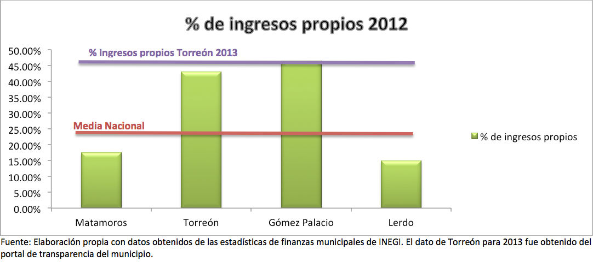
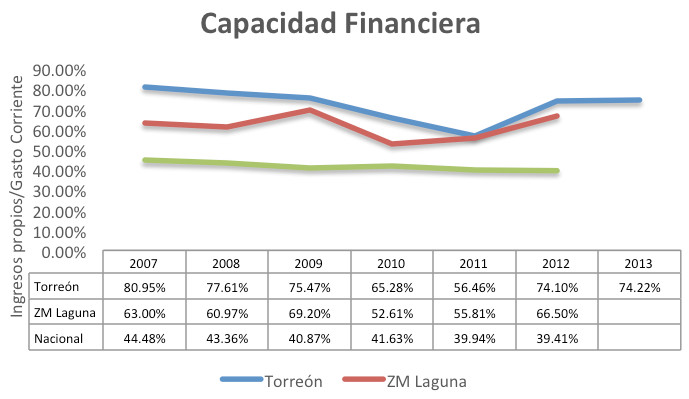
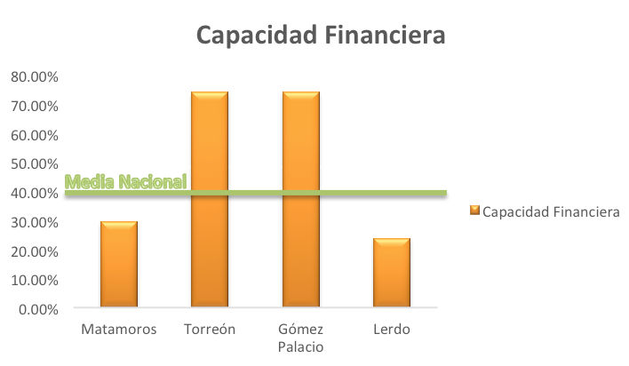

Torreón, Coahuila se encuentra entre los municipios con mayor independencia económica del país. Los resultados se obtuvieron con el cálculo y comparación de dos indicadores explicados enseguida: 1) relación de ingresos propios y totales y 2) capacidad financiera.
Relación de ingresos propios y totales
En 2012, los ingresos propios de Torreón representaron el 43% de sus ingresos totales, mientras el promedio nacional de los municipios fue de 20.91%. Dichos ingresos propios son obtenidos por los impuestos, aprovechamientos, productos y derechos municipales como el impuesto al predial, licencias y permisos, devoluciones y venta de bienes, por nombrar algunos.
En el mismo año los ingresos propios de la Zona Metropolitana de La Laguna equivalen al 39.97% de sus ingresos totales, encontrándose también en niveles superiores a la media nacional. En la gráfica inferior se presentan los resultados de éste indicador para cada municipio de nuestra metrópoli:
Son los municipios de Torreón y Gómez Palacio quienes suben el promedio de La Laguna, pues tanto Matamoros como Lerdo se posicionan por debajo de la media nacional. Notemos en la gráfica el resultado del indicador en el 2013, el cual es 2% más alto al de 2012.
Entre las ciudades de la república con mayor proporción de ingresos propios se encuentran Los Cabos y San Pedro Garza García con 52.16% y 47.73% respectivamente.
Capacidad financiera
Este indicador se refiere al porcentaje del gasto corriente que un municipio es capaz de cubrir utilizando sus ingresos propios. Un mayor porcentaje significa menor dependencia de los apoyos federales y estatales.
Torreón se encuentra por arriba de la media nacional en el indicador, cubriendo el 74.10% de sus gastos corrientes en 2012 y 74.22% en 2013. El promedio nacional en 2012 fue de 39.41%, el cual en los últimos 6 años se ha mantenido alrededor del 40%, mientras el promedio de la Zona Metropolitana de La Laguna ha tenido más cambios, alcanzando su punto más alto en 2009 cuando cubrió el 69.20% de su gasto corriente. En 2012 el promedio de la zona fue de 66.50%.
Torreón y Gómez Palacio levantan el promedio de la zona, pues sus ingresos propios representan el 74% de su gasto corriente:
Al ordenar los municipios conforme a su capacidad financiera, siendo el número uno aquel con mayor porcentaje, Gómez Palacio y Torreón ocuparían los lugares 60 y 65 respectivamente, de los más de 2,000 municipios de la república. El resultado es satisfactorio más no ideal ya que aun dependemos 25% de los gobiernos federal y estatal para la operación del municipio.
Ejemplos como San Luis Potosí, Juárez y Ramos Arizpe cuyos ingresos propios comprenden el 94.68%, 80.15% y 103.11% de su gasto corriente demuestran lo que podemos lograr tomando medidas adecuadas de disminución de gasto corriente o bien el aumento de ingreso propios.